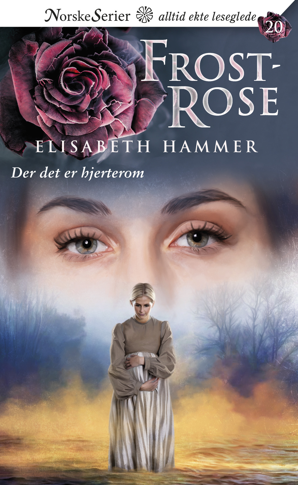

Der det er hjerterom
Vår pris: 100 kr
Adeline aner ikke hva hun skal gjøre når Vera plutselig dukker opp i Foyngården. Den unge jenta fra Russland er høygravid og levner ingen tvil om hvem som er faren.
– Er det Vidar som er far til barnet ditt? Det lød mest som et lite pip, og Adeline så bedende på Vera og håpet at hun skulle si noe for å oppklare denne store misforståelsen. Men Vera svarte ikke. Det så ikke ut som om hun forsto hvorfor de reagerte som de gjorde. Hun så bare på Adeline med mørke, redde øyne. – Vidar, han … Far til barn, hvisket hun til slutt.
Elisabeth Hammer
Elisabeth Hammer (1970) bor i Horten og skriver fra Vestfold. Hun har tidligere utgitt seriene Maria av Svaneberg, Mistelteinog Skumringstid – og nå skriver hun på Frostrose.